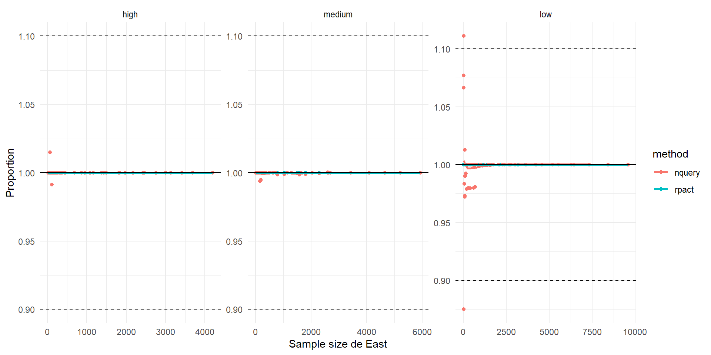
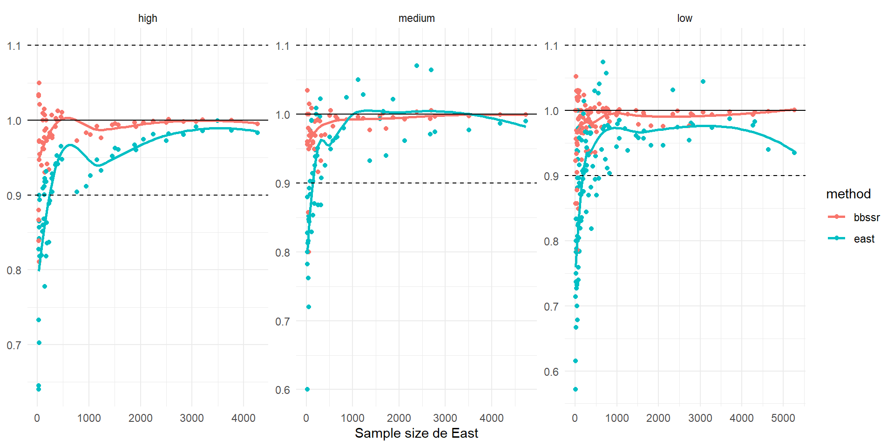
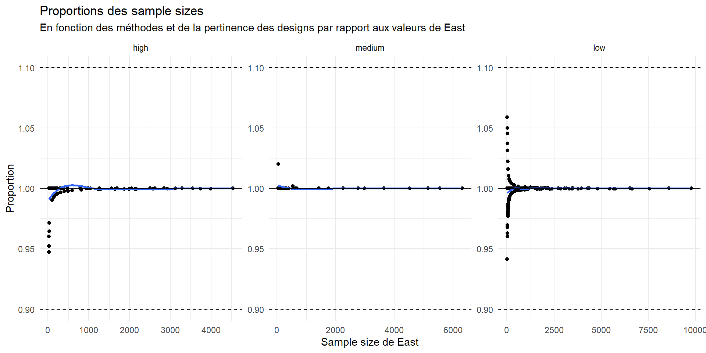
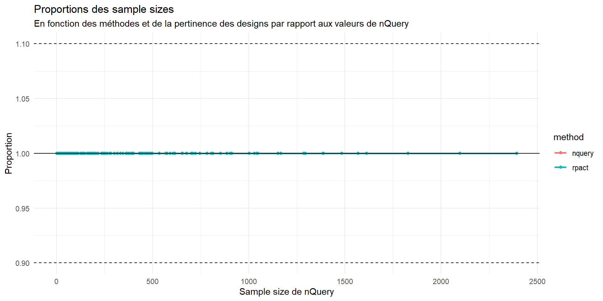
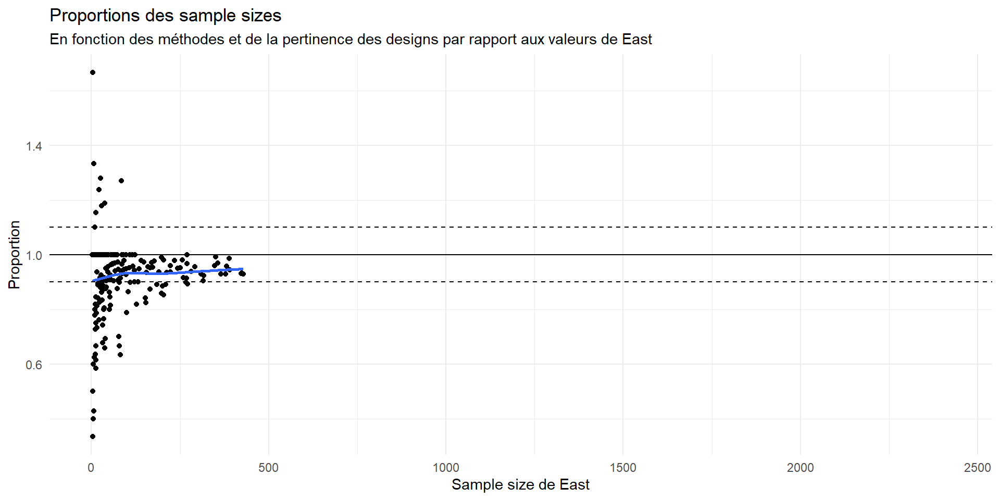
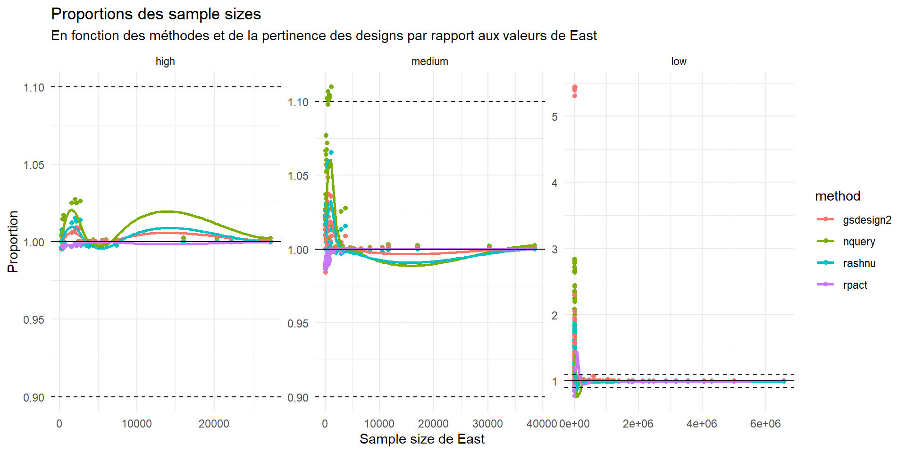
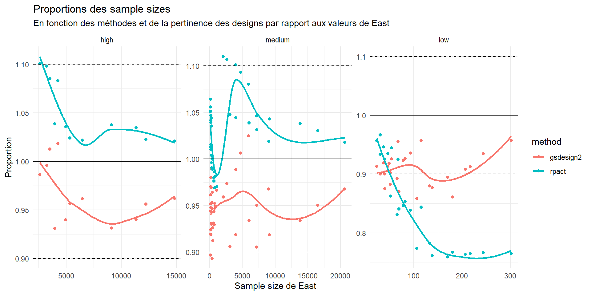
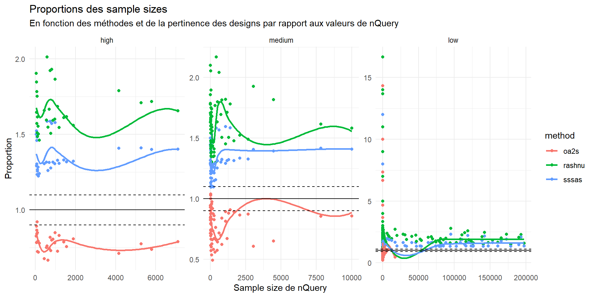

Comparison of Sample Size Calculations Across Methods
R as an alternative to East and nQuery
![]()
February 19, 2026
Table of Contents
Introduction
A paragraph with some text and a link.
Motivations
Why for sample size calculation ?
- do all analysis in without having to use an external tool
- share code to someone (better than share an East of nQuery project)
- avoid problem with export
- free and open-source code, allows to open issue, ask new feature, fork the code
-> packages need validation to get the same credibility and trust as proprietary softwares like East and nQuery
Scope of the comparison
Explored methods per clinical trials
| Endpoints | Design Type | Computation | Software | package |
|---|---|---|---|---|
| Survival | Two-arm Fixed | East, nQuery | Rpact, Rashnu, gsDesign2 | |
| Survival | One-arm Fixed | nQuery | oa2s, sssas, Rashnu | |
| Survival | Two-arm Group-Sequential | East | Rpact, gsDesign2 | |
| Binary | Two-arm Fixed | Exact | East, nQuery | bbssr |
| Binary | Two-arm Fixed | Pooled | East, nQuery | Rpact, bbssr |
| Binary | Two-arm Fixed | Unpooled | East, nQuery | |
| Binary | One-arm Fixed | Exact | East | A’Hern(no package) |
| Binary | One-arm Fixed | Non_exact? | East, nQuery | Rpact |
| Binary | Two-arm Group-Sequential | Pooled | East | Rpact |
Scope of the comparison
Explored clinical trials
Binary endpoints
Quick theorical background
Required input
- To compute required number of event we need:
- \(\alpha\): Type I error
- power (\(1-\beta\)): jsp
- Proportion of control group \(\pi_c\)
- Proportion of experimental group \(\pi_e\)
Quick theorical background
formula
Two-Arms fixed design
Methods compared
| Endpoints | Design Type | Computation | Software | package |
|---|---|---|---|---|
| Binary | Two-arm Fixed | Exact | East, nQuery | bbssr |
| Binary | Two-arm Fixed | Pooled | East, nQuery | Rpact, (bbssr) |
| Binary | Two-arm Fixed | Unpooled | East, nQuery |
- East: Difference of Proportions test [PN-2S-DI]
- nQuery : PTT36 / Inequality Tests for Difference of Two Proportions
Two-Arms fixed design
Results
| Proportions des sample sizes | ||||||
| En fonction des méthodes par rapport aux valeurs de East | ||||||
| Pertinence | Min | Q1 | Moyenne | Médiane | Q3 | Max |
|---|---|---|---|---|---|---|
| high | ||||||
| nquery | 0.991 | 1 | 1 | 1 | 1 | 1.01 |
| rpact | 1.000 | 1 | 1 | 1 | 1 | 1.00 |
| medium | ||||||
| nquery | 0.994 | 1 | 1 | 1 | 1 | 1.00 |
| rpact | 1.000 | 1 | 1 | 1 | 1 | 1.00 |
| low | ||||||
| nquery | 0.875 | 1 | 1 | 1 | 1 | 1.11 |
| rpact | 1.000 | 1 | 1 | 1 | 1 | 1.00 |

Two-Arms fixed design
Results II
| Proportions des sample sizes | ||||||
| En fonction des méthodes par rapport aux valeurs de East | ||||||
| Pertinence | Min | Q1 | Moyenne | Médiane | Q3 | Max |
|---|---|---|---|---|---|---|
| high | ||||||
| bbssr | 0.811 | 0.972 | 0.979 | 0.992 | 1.000 | 1.05 |
| east | 0.640 | 0.856 | 0.897 | 0.915 | 0.955 | 1.00 |
| medium | ||||||
| bbssr | 0.800 | 0.969 | 0.978 | 0.991 | 0.999 | 1.03 |
| east | 0.600 | 0.869 | 0.925 | 0.944 | 0.989 | 1.07 |
| low | ||||||
| bbssr | 0.786 | 0.971 | 0.981 | 0.993 | 1.000 | 1.05 |
| east | 0.571 | 0.827 | 0.894 | 0.916 | 0.966 | 1.07 |

Two-Arms group sequential design
Methods compared
| Endpoints | Design Type | Computation | Software | package |
|---|---|---|---|---|
| Binary | Two-arm Group-Sequential | Pooled | East | Rpact |
- East: Difference of Proportions test [PN-2S-DI]
Two-Arms group sequential design
Results I
| Proportions Rpact/East | |||||
| En fonction des méthodes et de la pertinence des designs par rapport aux valeurs de East | |||||
| Min | Q1 | Moyenne | Médiane | Q3 | Max |
|---|---|---|---|---|---|
| high | |||||
| 0.964 | 1.000 | 0.998 | 1 | 1 | 1.00 |
| medium | |||||
| 0.947 | 1.000 | 0.998 | 1 | 1 | 1.02 |
| low | |||||
| 0.941 | 0.999 | 0.999 | 1 | 1 | 1.06 |

One-Arm design
Methods compared
| Endpoints | Design Type | Computation | Software | package |
|---|---|---|---|---|
| Binary | One-arm Fixed | Exact | East | A’Hern(no package) |
| Binary | One-arm Fixed | Non_exact? | East, nQuery | Rpact |
- East : Single Proportion test [PN-1S-SP]
- nQuery : POT0 / Chi Square Test for One Proportion
One-Arm design
Results I
| Proportions des sample sizes | ||||||
| En fonction des méthodes et de la pertinence des designs par rapport aux valeurs de nQuery | ||||||
| Pertinence | Min | Q1 | Moyenne | Médiane | Q3 | Max |
|---|---|---|---|---|---|---|
| high | ||||||
| nquery | 1 | 1 | 1 | 1 | 1 | 1 |
| rpact | 1 | 1 | 1 | 1 | 1 | 1 |
| medium | ||||||
| nquery | 1 | 1 | 1 | 1 | 1 | 1 |
| rpact | 1 | 1 | 1 | 1 | 1 | 1 |
| low | ||||||
| nquery | 1 | 1 | 1 | 1 | 1 | 1 |
| rpact | 1 | 1 | 1 | 1 | 1 | 1 |

One-Arm design
Results II
| Proportions A'Hern/East | |||||
| En fonction des méthodes et de la pertinence des designs par rapport aux valeurs de East | |||||
| Min | Q1 | Moyenne | Médiane | Q3 | Max |
|---|---|---|---|---|---|
| 0.333 | 0.881 | 0.92 | 0.943 | 1 | 1.67 |

Time-to-event endpoints
Quick theorical background
Required input
- To compute required number of event we need:
- \(\alpha\): Type I error
- power (\(1-\beta\)): jsp
- hazard ratio: \(\lambda_2/\lambda_1\)
- In addition, to compute sample size we need:
- Survival probability of control group at a certain time \(t\)
- Accrual time
- Follow-up time
- Dropout rate
Quick theorical background
Schoenfeld formula
\[ e = \frac{4 (z_{1-\alpha/2} + z_{1-\beta})^2}{(\log(HR))^2} \]
Other formula “Freedman” and “Hsieh-Freedman”
Two-Arms fixed design
Methods compared
| Endpoints | Design Type | Software | package |
|---|---|---|---|
| Survival | Two-arm Fixed | East, nQuery | Rpact, Rashnu, gsDesign2 |
- East: Log Rank Test Given Accrual Duration and Study Duration [SU-2S-LRSD]
- nQuery : STT1 / Two Sample Log-Rank Test of Exponential Survival
Two-Arms fixed design
Results
| Proportions des sample sizes | ||||||
| En fonction des méthodes et de la pertinence des designs par rapport aux valeurs de East | ||||||
| Pertinence | Min | Q1 | Moyenne | Médiane | Q3 | Max |
|---|---|---|---|---|---|---|
| high | ||||||
| gsdesign2 | 0.995 | 1.000 | 1.000 | 1.000 | 1.00 | 1.01 |
| nquery | 0.997 | 1.000 | 1.010 | 1.000 | 1.01 | 1.03 |
| rashnu | 0.995 | 0.998 | 1.000 | 1.000 | 1.00 | 1.02 |
| rpact | 0.995 | 0.997 | 0.999 | 1.000 | 1.00 | 1.00 |
| medium | ||||||
| gsdesign2 | 0.984 | 1.000 | 1.010 | 1.000 | 1.01 | 1.05 |
| nquery | 1.000 | 1.000 | 1.030 | 1.020 | 1.04 | 1.11 |
| rashnu | 0.996 | 1.000 | 1.010 | 1.010 | 1.02 | 1.07 |
| rpact | 0.984 | 0.992 | 0.996 | 0.998 | 1.00 | 1.00 |
| low | ||||||
| gsdesign2 | 0.846 | 1.000 | 1.210 | 1.000 | 1.07 | 5.44 |
| nquery | 0.985 | 1.000 | 1.260 | 1.010 | 1.13 | 2.84 |
| rashnu | 0.963 | 0.998 | 1.090 | 1.000 | 1.03 | 1.87 |
| rpact | 0.778 | 0.999 | 1.120 | 1.000 | 1.00 | 5.44 |
Two-Arms fixed design
Results II

Two-Arms group sequential design
Methods compared
| Endpoints | Design Type | Computation | Software | package |
|---|---|---|---|---|
| Survival | Two-arm Group-Sequential | East | Rpact, gsDesign2 |
- East: Log Rank Test Given Accrual Duration and Study Duration [SU-2S-LRSD]
Two-Arms group sequential design
Results I
| Proportions des sample sizes | ||||||
| En fonction des méthodes et de la pertinence des designs par rapport aux valeurs de East | ||||||
| Pertinence | Min | Q1 | Moyenne | Médiane | Q3 | Max |
|---|---|---|---|---|---|---|
| high | ||||||
| gsdesign2 | 0.931 | 0.940 | 0.966 | 0.959 | 0.989 | 1.020 |
| rpact | 1.020 | 1.020 | 1.050 | 1.040 | 1.080 | 1.100 |
| medium | ||||||
| gsdesign2 | 0.893 | 0.927 | 0.946 | 0.947 | 0.966 | 1.020 |
| rpact | 0.969 | 0.992 | 1.030 | 1.030 | 1.050 | 1.110 |
| low | ||||||
| gsdesign2 | 0.858 | 0.887 | 0.907 | 0.908 | 0.925 | 0.957 |
| rpact | 0.759 | 0.770 | 0.852 | 0.846 | 0.925 | 0.967 |
Two-Arms group sequential design
Results II

Two-Arms group sequential design
Results III
| Sample Size dans des cas pertinents | |||||
| α = 0.05, β = 0.1 et HR = 0.6 | |||||
| Survie à 3 ans |
Sample Size
|
Ratio
|
|||
|---|---|---|---|---|---|
| Rpact | East | gsDesign2 | Rpact/East | gsDesign2/East | |
One-Arm design
Methods compared
| Endpoints | Design Type | Computation | Software | package |
|---|---|---|---|---|
| Survival | One-arm Fixed | nQuery | oa2s1, sssas2, Rashnu |
- nQuery : SOT1 / One Sample Log-Rank Test with Accrual
One-Arm design
Results I
| Proportions des sample sizes | ||||||
| En fonction des méthodes et de la pertinence des designs par rapport aux valeurs de nQuery | ||||||
| Pertinence | Min | Q1 | Moyenne | Médiane | Q3 | Max |
|---|---|---|---|---|---|---|
| high | ||||||
| oa2s1 | 0.668 | 0.743 | 0.784 | 0.786 | 0.820 | 0.921 |
| rashnu | 1.460 | 1.560 | 1.670 | 1.630 | 1.760 | 2.010 |
| sssas2 | 1.220 | 1.290 | 1.370 | 1.320 | 1.420 | 1.590 |
| medium | ||||||
| oa2s1 | 0.494 | 0.667 | 0.782 | 0.807 | 0.884 | 1.040 |
| rashnu | 1.300 | 1.450 | 1.610 | 1.590 | 1.740 | 2.170 |
| sssas2 | 1.100 | 1.220 | 1.310 | 1.290 | 1.400 | 1.590 |
| low | ||||||
| oa2s1 | 0.219 | 0.655 | 1.140 | 0.857 | 1.100 | 14.300 |
| rashnu | 0.667 | 1.570 | 2.120 | 1.860 | 2.180 | 16.700 |
| sssas2 | 0.547 | 1.330 | 1.720 | 1.490 | 1.700 | 13.700 |
| 1 OneArm2stage | ||||||
| 2 SampleSizeSingleArmSurvival | ||||||
One-Arm design
Results II

Vertical slide 1
Vertical slide 2
Global options
The options below have user configurable options. In a regular Reveal.js presentation, these can be set through JavaScript, but Quarto makes it configurable through YAML options.
- menubarclass
- menuclass
- activeclass
- activeelement
- barhtml
- flat
- scale
Option 1: menubarclass
The menubarclass option sets the classname of menubars.
Simplemenu will show the menubar(s) on all pages. If you do not want to show the menubar on certain pages, use data-state=“hide-menubar” on that section. This behaviour also works when exporting to PDF using the Reveal.js ?print-pdf option.
Option 2: menuclass
The menuclass option sets the classname of the menu.
Simplemenu looks inside this menu for list items (LI’s).
Option 3: activeclass
The activeclass option is the class an active menuitem gets.
Option 4: activeelement
The activeelement option sets the item that gets the active class.
You may want to change it to the anchor inside the li, like this: activeelement: "a".
Option 5: barhtml
You can add the HTML for the header (and/or footer) through this option. This way you no longer need to edit the template.
Option 5: barhtml (Continued)
You can also move the slide number or the controls to your header or footer. If they are nested there manually, or through the barhtml option, they will then display inside that header or footer.
Option 6: flat
Sometimes you’ll want to limit your presentation to horizontal slides only. To still use ‘chapters’, you can use the flat option. By default, it is set to false, but you can set it to true. Then, when a data-name is set for a slide, any following slides will keep that menu name.
To stop inheriting the previous slide menu name, start a new named section, or add data-sm="false" to your slide.
Option 7: scale
When you have a lot of subjects/chapters in your menubar, they might not all fit in a row. You can then tweak the scale in the options. Simplemenu copies the Reveal.js (slide) scaling and adds a scale option on top of that.
It is set to be two-thirds of the main scaling.
More demos
For more demos go to the Simplemenu plugin for Reveal.js. Not all of the options in the regular plugin are available in the Quarto plugin.